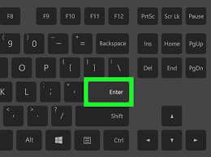

Invoer en uitvoer
Invoer: dit is alles wat je in een computer stop zodat de computer er iets mee kan doen.

simpele afbeelding waar je een vb van invoer ziet.
Waarom is invoer belangrijk
invoer is belangrijk want zonder invoer weet de computer niet wat ie moet doen bv als je iets in klikt op je toetsenbord anders weet de computer niet wanneer die iets moet weergeven.
Uitvoer:uitvoer is wat de computer weergeeft na de uitvoering van een commando(uitvoer). dus bv een afbeeldng als je op een link klikt weergeeft het een afbeelding dat is uitvoer.
voorbeeld van invoer-uitvoer is bv een link naar een website.